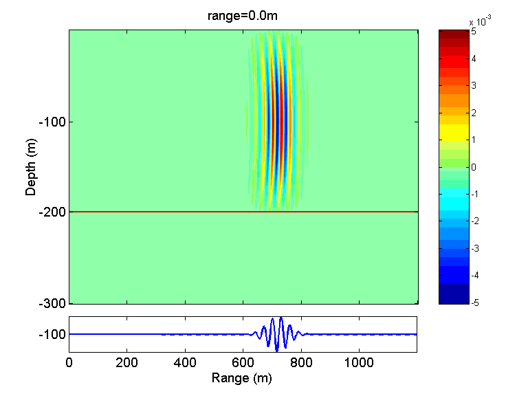

The acoustic field is initialized at 100m-depth by a 50Hz narrowband source pulse (5-cycle sine wave). The initial acoustic Mach number is 0.005. The field is modulated by Gaussian envelopes in both depth and range.
Le champ acoustique est initialisé à 100 m de profondeur par une impulsion source à bande étroite de 50 Hz (sinusoïde de 5 cycles). Le nombre de Mach acoustique initial est de 0,005. Le champ est modulé par des enveloppes gaussiennes en profondeur et en distance.
The simulations below track the pulse over a 200km range, comparing linear and nonlinear behaviors in a shallow-water environment.
Les simulations ci-dessous suivent l'impulsion sur une distance de 200 km, comparant les comportements linéaires et non-linéaires en milieu peu profond.

Fig. 3.a: Linear acoustic propagation (Shallow Water) Fig. 3.a : Propagation acoustique linéaire (Eaux peu profondes) (Nonlinear steepening term removed / Terme de raidissement supprimé)
Fig. 3.b: Nonlinear acoustic propagation (Shallow Water) Fig. 3.b : Propagation acoustique non-linéaire (Eaux peu profondes) (Full NPE model implementation / Modèle NPE complet)